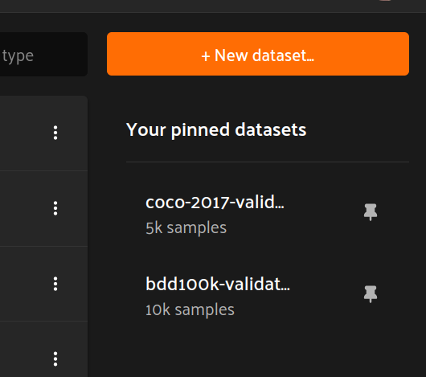
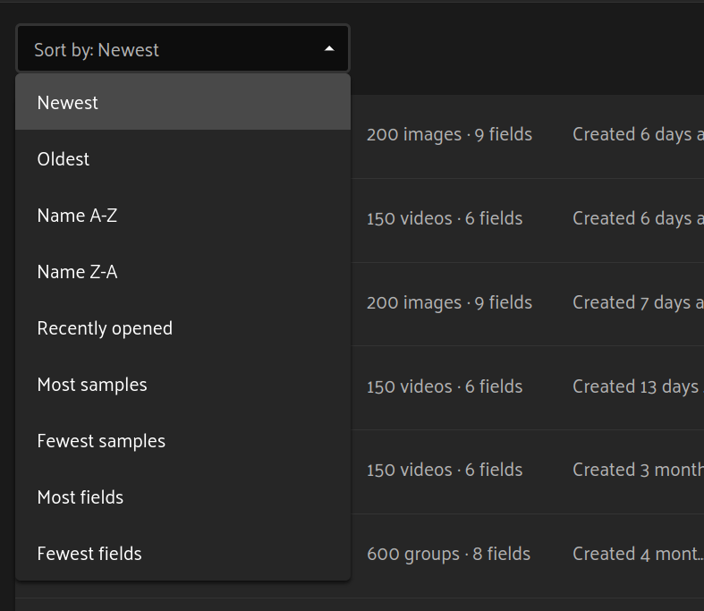
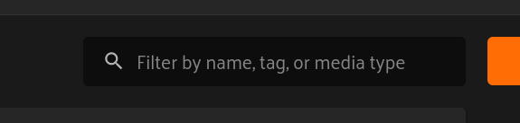
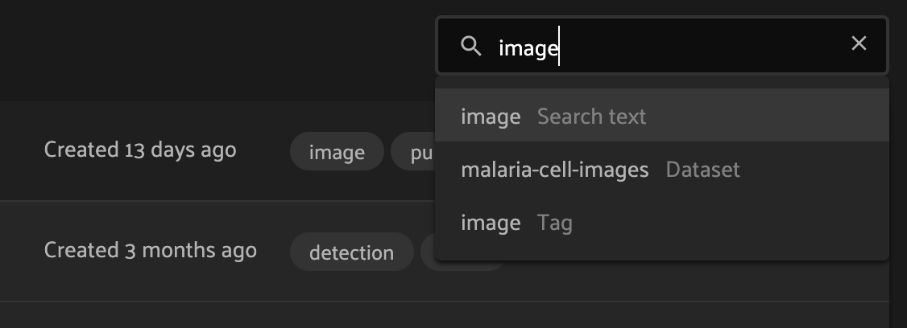
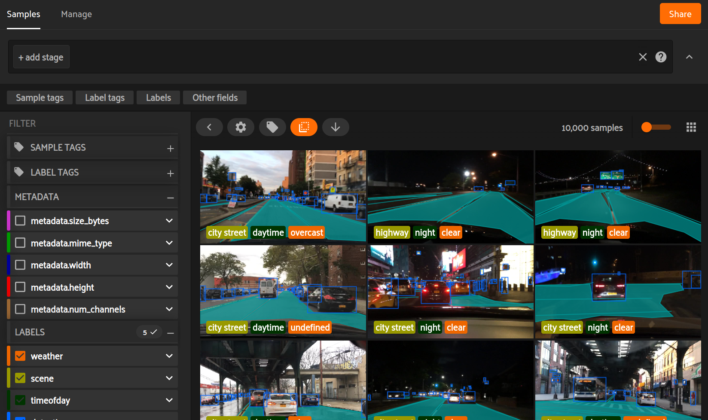
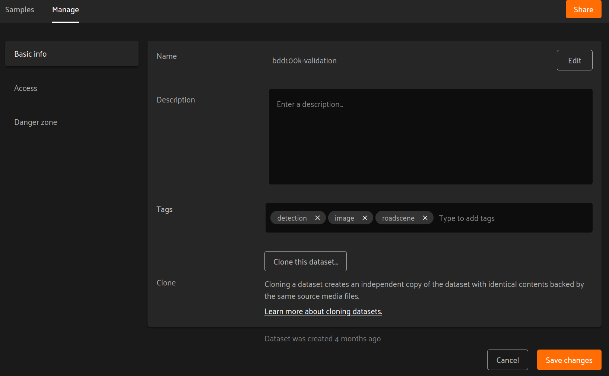
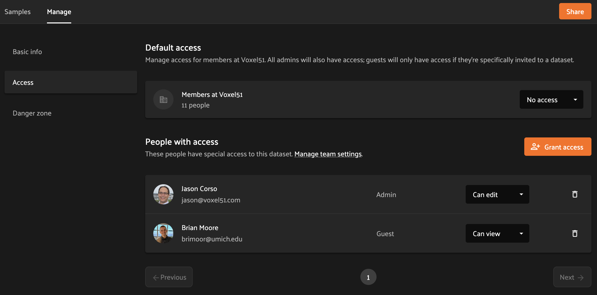
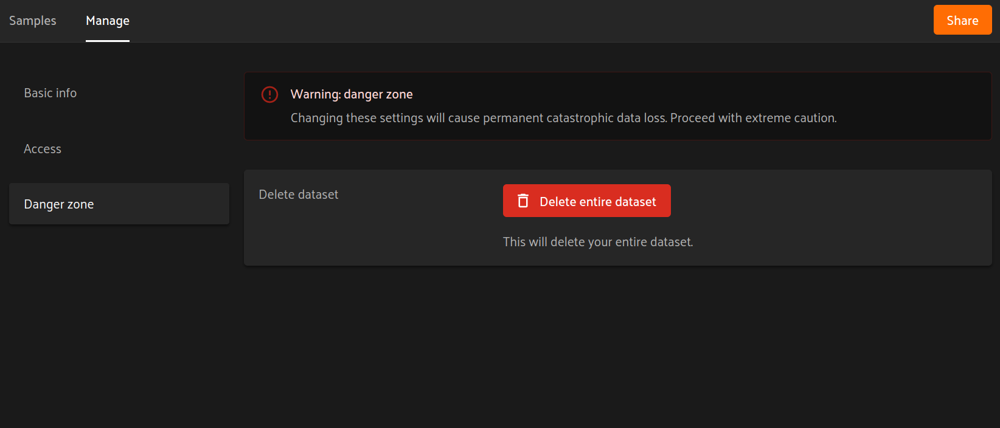

FiftyOne Teams App¶
The FiftyOne Teams App allows you to visualize, browse, and interact with your individual datasets like you can with the FiftyOne App, but with expanded features for organizing, permissionsing, versioning, and sharing your team’s datasets, all from a centralized web portal.
This page provides a brief overview of some features available only in the FiftyOne Teams App.
The homepage¶
When you login to the FiftyOne Teams App, you’ll land on the homepage pictured below.
In the top bar of this page, on the left side, the gray number next to “All datasets” indicates the total number of datasets that you have access to. If there are more than 20 datasets, you can use the “Previous” and “Next” buttons at the bottom of the page to see different batches of datasets.
Note
You can return to the homepage from any page of the Teams App by clicking on the Voxel51 logo in the upper left corner.
Pinned datasets¶
You can pin datasets for easy access by hovering over the dataset’s name in the main table and clicking the pin icon.
The “Your pinned datasets” widget on the right-hand side of the hompage shows your pinned datasets at a glance and allows you to quickly open one by clicking on its name. Pinned datasets are listed in reverse chronological order (most recently pinned on top).
To unpin a dataset, click the pin icon next to the dataset name in the “Your pinned datasets” widget or the pin next to the dataset’s name in the main table.
{kind=link}
Sorting datasets¶
You can use the drop-down menu in the upper left of the main table to sort your datasets by various criteria, including size, creation date, recently used, and alphabetically by name:
{kind=link}
Filtering datasets¶
You can use the search bar (with the magnifying glass icon) in the upper right corner of the dataset table to filter datasets by name, tags, and media type:
{kind=link}
By default, datasets that match across any supported field are returned, but you can narrow the search to specific fields by selecting the relevant option in the search dropdown:
{kind=link}
Creating datasets¶
To create a new dataset, click on the “New dataset” button in the upper right corner of the homepage. A pop-up will appear allowing you to choose a name, description, and tags for the dataset:
Name: as you’re typing a name for your dataset, a URL will appear below denoting the address at which the dataset will be accessible. If the name or URL is not available, you will be prompted to try another name.
Description: an optional free text description that you can use to store relevant information about your dataset.
Tags: an optional list of tag(s) for your dataset. For example, you may want to record the media type, task type, project name, or other pertinent information. To add a tag, type it in the text bar. If you have previously used a tag, it will automatically appear in a dropdown and you can select it. To add a new tag, type tab or comma.
Note
A dataset’s name, description, and tags can be edited later from the dataset’s Manage tab.
Note
What next? Use the Teams Python SDK to upload new samples, labels, and metadata to your dataset. A common approach is to automate this process via cloud functions.
Using a dataset¶
Click on a dataset from the homepage to open the dataset’s “Samples” tab.
From the Samples tab you can visualize, tag, filter, and explore your dataset just as you would via the FiftyOne App.
Note
Did you know? You can also navigate directly to a dataset of interest by pasting its URL into your browser’s URL bar.
Managing a dataset¶
The FiftyOne Teams App provides a number of options for managing existing datasets, as described below.
You can access these options from the Samples tab by clicking on the “Manage” tab in the upper left corner of the page.
You can also directly navigate to this page from the homepage by clicking the three dots on the right hand side of a row of the dataset listing table and selecting “Edit dataset”.
Note
Did you know? You can also use the Teams SDK to programmatically, create, edit, and delete datasets.
Basic info¶
The “Basic info” tab is accessible to all users with Can view access to the dataset.
Users with Can manage permissions on the dataset can edit the name, description, and tags of a dataset from this page.
Additionally, members can create a copy of the dataset by clicking on the “Clone this dataset” button.
Access¶
The “Access” tab is only accessible to users with Can manage permissions on the dataset.
From this tab, users can add, remove, edit, or invite users to the dataset. Refer to this page for more information about the available dataset-level permissions that you can grant.
Danger zone¶
The “Danger zone” tab is only accessible to users with Can manage permissions on the dataset.
From this tab, you can select “Delete entire dataset” to permanently delete a dataset from your Teams deployment. You must type the dataset’s full name in the modal to confirm this action.
Warning
Deleting a dataset is permanent!